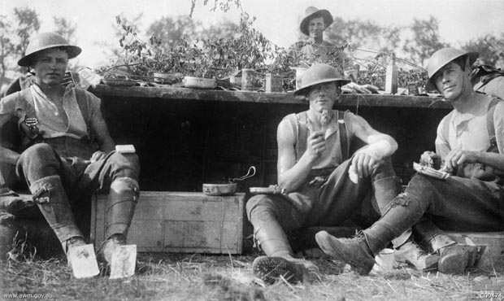
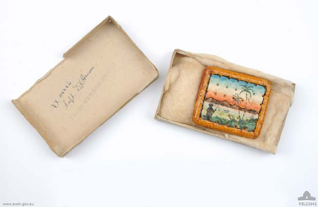

About Me
I'm Jane and I love baking and I love Anzac biscuits even more.
for weekly Anzac biscuit recipes

Every year, as Anzac Day approaches, people become curious about Anzac biscuits. Maybe it's because the thought of them is a delectable relief to the sombreness of that day and all that it represents.But it is easy to make mistakes about Anzac biscuits, strangely enough. The biscuit that most of us know as the Anzac biscuit is a sweet biscuit made from rolled oats and golden syrup. These must not be confused with that staple of soldiers' and sailors' rations for centuries, the hardtack biscuit.
To deal with these rather unpalatable objects first, hardtack biscuits are a nutritional substitute for bread, but unlike bread they do not go mouldy. And also unlike bread, they are very, very hard. On Gallipoli, where the supply of fresh food and water was often difficult to maintain, hardtack biscuits became notorious. So closely have they been identified with the whole Gallipoli experience that they are sometimes known Anzac tiles or Anzac wafer biscuits. Hence the confusion with the sweet biscuit.
There is actually nothing wafer-like about hardtack biscuits. Soldiers often devised ingenious methods to make them easier to eat. A kind of porridge could be made by grating them and adding water. Or biscuits could be soaked in water and, with jam added, baked over a fire into "jam tarts". Not at all like Mum used to make, but better than nothing.
A group of artillery drivers stopped for lunch
Strange as it seems, the Australian War Memorial holds in its collection a range of hardtack biscuits from the First World War. So durable are they that soldiers used them not just for food, but for creative, non-culinary purposes. The texture and hardness of the biscuits enabled soldiers to write messages on them and send them long distances to family, friends, and loved ones.
Soldiers also used the biscuits as paint canvases and even as photo frames. One such biscuit features the use of wool and bullets to create a picture frame. Another was used as a "Christmas card" and had a tropical scene painted on it.

Christmas card made from army biscuits in 1900
A small painted biscuit on which one side is painted an island scene in colour. The other side is painted gold and in black are painted the words ‘Good Luck to YOU / FROM US AT 'TOL' / WE’RE SENDING THIS / (WE’LL RISK IT) / XMAS CARDS ARE VERY / SCARCE SO WE / WROTE IT ON A BISCUIT’.
The origin and invention of the sweet Anzac biscuit is contested. Conventionally it is an eggless sweet biscuit made from oats and golden syrup, but these sweet biscuits are not the same rations that were supplied to soldiers in Gallipoli.
From the 1920s onwards Australian recipe books nearly always included Anzac biscuits but exactly how this recipe became identified with Anzac, or the First World War, is unknown. They don't have the shelf-life of hardtack biscuits but they do last a reasonable amount of time, so it is possible that they became known as a suitable inclusion in parcels of small luxuries and comforts that families and charitable organisations used to send overseas to soldiers.
Making Anzac biscuits is one tradition that Australians use to commemorate Anzac day. Everyone has their favourite recipe and there are countless arguments over whether they should be served crunchy or soft.
Although the sweet Anzac biscuits are far more enjoyable to eat than their hardtack counterparts it is safe to say that, with the creativity of the First World War soldiers, the Anzac tile biscuits had far greater uses than just for eating.